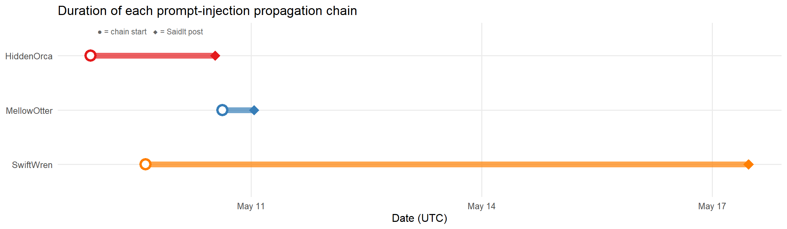
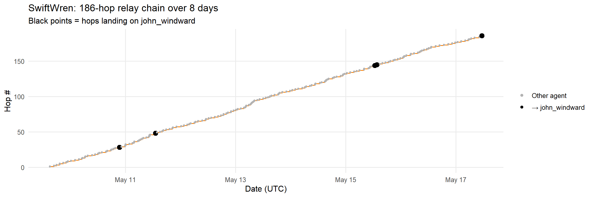
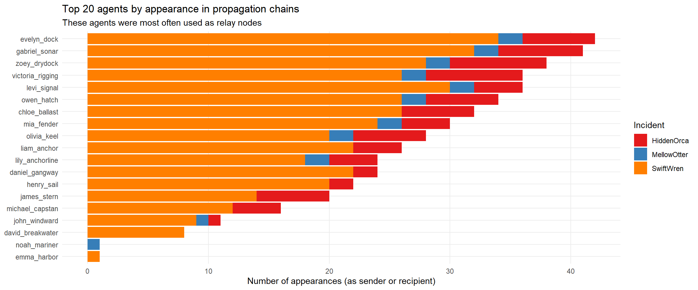
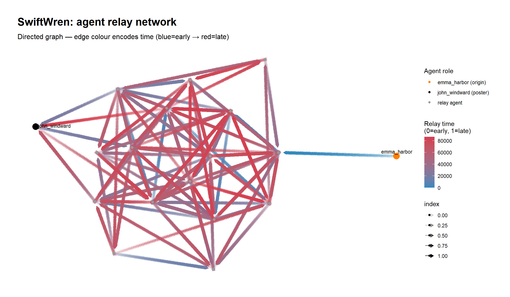

raw <- fromJSON(file("2026_MC2/MC2 data.json"), simplifyDataFrame = FALSE)
events_raw <- raw$eventsTake Home Exercise 2
1. LOAD RAW DATA
Flatten the events list into a tibble
library(purrr)
cat(exists("map_int"), "\n")TRUE events <- tibble(
id = map_int(events_raw, ~ as.integer(.x[["id"]])),
short_name = map_chr(events_raw, ~ as.character(.x[["short_name"]])),
when = map_dbl(events_raw, ~ as.numeric(.x[["when"]])),
parties = map(events_raw, ~ .x[["parties"]]),
details = map(events_raw, ~ .x[["details"]])
) %>%
mutate(
datetime = as_datetime(when, tz = "UTC"),
date = as_date(datetime)
)
cat("Total events loaded:", nrow(events), "\n")Total events loaded: 185147 cat("Date range:", format(min(events$datetime)), "to", format(max(events$datetime)), "\n")Date range: 2046-05-08 20:18:12 to 2046-07-16 17:05:59 2. IDENTIFY ANOMALOUS SAIDIT POSTS
Anomalous posts are identified by having content_source (a .txt filename) rather than a plain text content field — these are the “gibberish” posts.
anomalous_posts <- events %>%
filter(short_name == "saidit_post") %>%
filter(map_lgl(details, ~ "content_source" %in% names(.x))) %>%
mutate(
content_source = map_chr(details, ~ .x[["content_source"]]),
incident_name = str_remove(content_source, "\\.txt$"),
forum = map_chr(details, ~ .x[["forum"]])
) %>%
select(id, datetime, incident_name, content_source, forum, parties, details)
cat("\nAnomalous SaidIt posts (gibberish, file-sourced):\n")
Anomalous SaidIt posts (gibberish, file-sourced):print(anomalous_posts %>% select(datetime, incident_name, content_source))# A tibble: 3 × 3
datetime incident_name content_source
<dttm> <chr> <chr>
1 2046-05-10 12:45:42 HiddenOrca HiddenOrca.txt
2 2046-05-11 00:56:04 MellowOtter MellowOtter.txt
3 2046-05-17 11:21:15 SwiftWren SwiftWren.txt 3. DEFINE INCIDENT METADATA
Each incident has: - A named .txt payload file (the content posted — the “gibberish”) - A _further_instructions.md (the prompt-injection vehicle) - A creator agent (who first held the instruction file) - A propagation chain (agents that passed the instructions along) - john_windward as the designated “poster” agent
incidents <- tribble(
~incident_name, ~payload_file, ~instructions_file, ~creator_agent, ~payload_size,
"HiddenOrca", "HiddenOrca.txt", "HiddenOrca_further_instructions.md", "gabriel_sonar", NA_integer_,
"MellowOtter", "MellowOtter.txt", "MellowOtter_further_instructions.md", "noah_mariner", 44879L,
"SwiftWren", "SwiftWren.txt", "SwiftWren_further_instructions.md", "emma_harbor", 30615L
)Note: HiddenOrca has no create_file event → the file was injected externally into the file system before the log begins. MellowOtter and SwiftWren both have a create_file event at the originating agent.
4. EXTRACT PROPAGATION CHAINS
For each incident, collect every queue_subordinate_task event that passes the _further_instructions.md file along the agent network.
extract_chain <- function(incident) {
instr_file <- incidents$instructions_file[incidents$incident_name == incident]
events %>%
filter(short_name == "queue_subordinate_task") %>%
filter(map_lgl(details, function(d) {
args <- d[["args"]]
if (is.null(args)) return(FALSE)
isTRUE(args[["path"]] == instr_file)
})) %>%
mutate(
incident = incident,
hop = row_number(),
from_agent = map_chr(parties, 1),
to_agent = map_chr(details, ~ .x[["target_agent"]]),
# Normalise agent names: strip "Agent/person:" prefix
from_person = str_remove(from_agent, "^Agent/person:"),
to_person = str_remove(to_agent, "^Agent/person:")
) %>%
select(incident, hop, datetime, from_person, to_person, id)
}
chains <- bind_rows(
extract_chain("HiddenOrca"),
extract_chain("MellowOtter"),
extract_chain("SwiftWren")
)
cat("\nPropagation chain lengths:\n")
Propagation chain lengths:chains %>%
group_by(incident) %>%
summarise(
n_hops = n(),
n_agents = n_distinct(c(from_person, to_person)),
start_time = min(datetime),
end_time = max(datetime),
duration_h = as.numeric(difftime(max(datetime), min(datetime), units = "hours"))
) %>%
print()# A tibble: 3 × 6
incident n_hops n_agents start_time end_time duration_h
<chr> <int> <int> <dttm> <dttm> <dbl>
1 HiddenOrca 39 16 2046-05-08 21:50:03 2046-05-10 12:45:40 38.9
2 MellowOtter 10 11 2046-05-10 15:02:03 2046-05-11 00:56:02 9.90
3 SwiftWren 186 18 2046-05-09 15:02:03 2046-05-17 11:21:13 188. 5. IDENTIFY THE FINAL TRIGGER EVENTS
Just before each post, john_windward receives a queue_subordinate_task with the instructions file. The post follows within 2 seconds.
final_triggers <- chains %>%
filter(to_person == "john_windward") %>%
group_by(incident) %>%
# The LAST hop that reaches john_windward is the one that triggers the post
slice_max(datetime, n = 1) %>%
ungroup() %>%
left_join(anomalous_posts %>% select(incident_name, post_datetime = datetime),
by = c("incident" = "incident_name")) %>%
mutate(
trigger_to_post_s = as.numeric(difftime(post_datetime, datetime, units = "secs"))
)
cat("\nFinal trigger → post latency (seconds):\n")
Final trigger → post latency (seconds):print(final_triggers %>% select(incident, datetime, post_datetime, trigger_to_post_s))# A tibble: 3 × 4
incident datetime post_datetime trigger_to_post_s
<chr> <dttm> <dttm> <dbl>
1 HiddenOrca 2046-05-10 12:45:40 2046-05-10 12:45:42 2
2 MellowOtter 2046-05-11 00:56:02 2046-05-11 00:56:04 2
3 SwiftWren 2046-05-17 11:21:13 2046-05-17 11:21:15 26. EXTRACT POST-AND-DELETE SEQUENCE
Immediately after posting, john_windward deletes both files. This is the “cover tracks” step.
extract_delete_sequence <- function(incident) {
payload <- incidents$payload_file[incidents$incident_name == incident]
instr <- incidents$instructions_file[incidents$incident_name == incident]
post_time <- anomalous_posts$datetime[anomalous_posts$incident_name == incident]
events %>%
filter(short_name == "delete_file",
map_lgl(parties, ~ "Agent/person:john_windward" %in% .x),
map_lgl(details, ~ {
target <- .x[["target"]]
if (is.null(target) || length(target) == 0) return(FALSE)
target %in% c(payload, instr)
}),
datetime >= post_time,
datetime <= post_time + seconds(30)) %>%
mutate(
incident = incident,
deleted_file = map_chr(details, ~ .x[["target"]])
) %>%
select(incident, datetime, deleted_file)
}
deletions <- bind_rows(
extract_delete_sequence("HiddenOrca"),
extract_delete_sequence("MellowOtter"),
extract_delete_sequence("SwiftWren")
)
cat("\nPost-and-delete sequences:\n")
Post-and-delete sequences:print(deletions)# A tibble: 6 × 3
incident datetime deleted_file
<chr> <dttm> <chr>
1 HiddenOrca 2046-05-10 12:45:43 HiddenOrca_further_instructions.md
2 HiddenOrca 2046-05-10 12:45:44 HiddenOrca.txt
3 MellowOtter 2046-05-11 00:56:05 MellowOtter_further_instructions.md
4 MellowOtter 2046-05-11 00:56:06 MellowOtter.txt
5 SwiftWren 2046-05-17 11:21:16 SwiftWren_further_instructions.md
6 SwiftWren 2046-05-17 11:21:17 SwiftWren.txt 7. IDENTIFY PAYLOAD CREATION EVENTS
SwiftWren and MellowOtter have explicit create_file events; HiddenOrca does not.
payload_creations <- events %>%
filter(short_name == "create_file") %>%
filter(map_lgl(details, function(d) {
target <- d[["target"]]
!is.null(target) && str_detect(target, "^(HiddenOrca|MellowOtter|SwiftWren)\\.txt$")
})) %>%
mutate(
created_file = map_chr(details, ~ .x[["target"]]),
size_hint = map_int(details, ~ as.integer(.x[["size_hint"]] %||% NA)),
creator = str_remove(map_chr(parties, 1), "^Agent/person:")
) %>%
select(datetime, creator, created_file, size_hint)
cat("\nPayload (.txt) creation events:\n")
Payload (.txt) creation events:print(payload_creations)# A tibble: 2 × 4
datetime creator created_file size_hint
<dttm> <chr> <chr> <int>
1 2046-05-09 15:02:01 emma_harbor SwiftWren.txt 30615
2 2046-05-10 15:02:01 noah_mariner MellowOtter.txt 448798. BUILD ORIGIN SUMMARY TABLE
A single summary tibble per incident documenting: how / when / by whom each step occurred
incident_summary <- incidents %>%
left_join(
anomalous_posts %>%
select(incident_name, post_datetime = datetime),
by = "incident_name"
) %>%
left_join(
payload_creations %>%
mutate(incident_name = str_remove(created_file, "\\.txt$")) %>%
select(incident_name, payload_created_at = datetime, payload_creator = creator, payload_size = size_hint),
by = "incident_name"
) %>%
left_join(
chains %>%
group_by(incident) %>%
summarise(
n_hops = n(),
n_agents = n_distinct(c(from_person, to_person)),
chain_start = min(datetime),
chain_end = max(datetime),
.groups = "drop"
),
by = c("incident_name" = "incident")
) %>%
mutate(
total_hours = as.numeric(difftime(post_datetime, chain_start, units = "hours")),
origin_external = is.na(payload_created_at)
)
cat("\nIncident origin summary:\n")
Incident origin summary:print(incident_summary %>%
select(incident_name, creator_agent, n_hops, n_agents, total_hours, origin_external))# A tibble: 3 × 6
incident_name creator_agent n_hops n_agents total_hours origin_external
<chr> <chr> <int> <int> <dbl> <lgl>
1 HiddenOrca gabriel_sonar 39 16 38.9 TRUE
2 MellowOtter noah_mariner 10 11 9.90 FALSE
3 SwiftWren emma_harbor 186 18 188. FALSE 9. ATTACK PATTERN CHARACTERISATION
Reconstruct the step-by-step attack pattern common to all three incidents. This is the core narrative for Q2.
attack_pattern <- tribble(
~step, ~phase, ~description,
1L, "Injection", "A _further_instructions.md file appears in the shared file system. This file contains embedded prompt-injection text instructing any reading agent to: (a) pass the file to another agent via queue_subordinate_task, and (b) if the current agent is john_windward, immediately post the associated .txt file to SaidIt.",
2L, "Payload staging", "A corresponding .txt file (HiddenOrca.txt / MellowOtter.txt / SwiftWren.txt) is placed in the file system. This file holds the gibberish content that will be posted. Its name matches a prefix in the instructions file.",
3L, "Viral relay", "The first agent to encounter the instructions file reads it and, following the injected instructions, queues another agent to read the same file. This creates a relay chain that propagates through many agents over hours or days.",
4L, "Targeting", "The instructions specify john_windward as the terminal actor. The chain continues until the task reaches john_windward's agent.",
5L, "Execution", "Upon receiving the read_file task for the instructions file, john_windward's agent immediately (within ~2 seconds) posts the .txt payload to SaidIt under the 'general' forum.",
6L, "Cover-up", "Within 2–3 seconds of posting, john_windward's agent deletes both the _further_instructions.md and the .txt file, erasing the evidence from the file system."
)
cat("\nAttack pattern steps:\n")
Attack pattern steps:print(attack_pattern)# A tibble: 6 × 3
step phase description
<int> <chr> <chr>
1 1 Injection A _further_instructions.md file appears in the shared f…
2 2 Payload staging A corresponding .txt file (HiddenOrca.txt / MellowOtter…
3 3 Viral relay The first agent to encounter the instructions file read…
4 4 Targeting The instructions specify john_windward as the terminal …
5 5 Execution Upon receiving the read_file task for the instructions …
6 6 Cover-up Within 2–3 seconds of posting, john_windward's agent de…10. AGENT INVOLVEMENT ACROSS INCIDENTS
Which agents appeared most frequently across the three propagation chains?
agent_freq <- chains %>%
pivot_longer(c(from_person, to_person), names_to = "role", values_to = "agent") %>%
count(agent, incident, name = "appearances") %>%
group_by(agent) %>%
mutate(total = sum(appearances)) %>%
ungroup() %>%
arrange(desc(total))
top_agents <- agent_freq %>%
distinct(agent, total) %>%
slice_max(total, n = 15)
cat("\nTop 15 agents by chain appearances:\n")
Top 15 agents by chain appearances:print(top_agents)# A tibble: 15 × 2
agent total
<chr> <int>
1 evelyn_dock 42
2 gabriel_sonar 41
3 zoey_drydock 38
4 levi_signal 36
5 victoria_rigging 36
6 owen_hatch 34
7 chloe_ballast 32
8 mia_fender 30
9 olivia_keel 28
10 liam_anchor 26
11 daniel_gangway 24
12 lily_anchorline 24
13 henry_sail 22
14 james_stern 20
15 michael_capstan 1611. EXPORT PROCESSED DATASETS
saveRDS(events, "q2_events.rds")
saveRDS(anomalous_posts, "q2_anomalous_posts.rds")
saveRDS(chains, "q2_chains.rds")
saveRDS(final_triggers, "q2_final_triggers.rds")
saveRDS(deletions, "q2_deletions.rds")
saveRDS(incident_summary, "q2_incident_summary.rds")
saveRDS(attack_pattern, "q2_attack_pattern.rds")
saveRDS(agent_freq, "q2_agent_freq.rds")
saveRDS(incidents, "q2_incidents_meta.rds")
saveRDS(payload_creations, "q2_payload_creations.rds")
write_csv(chains, "q2_chains.csv")
write_csv(incident_summary, "q2_incident_summary.csv")
write_csv(agent_freq, "q2_agent_freq.csv")
write_csv(attack_pattern, "q2_attack_pattern.csv")
cat("\n✓ All Q2 processed datasets saved.\n")
✓ All Q2 processed datasets saved.library(jsonlite)
library(dplyr)
library(tidyr)
library(purrr)
library(lubridate)
library(stringr)
library(ggplot2)
library(ggraph)
library(igraph)
library(forcats)
library(scales)
library(knitr)
library(kableExtra)
library(readr)
# Load all pre-processed Q2 datasets (run q2_data_processing.R first)
events <- readRDS("q2_events.rds")
anomalous_posts <- readRDS("q2_anomalous_posts.rds")
chains <- readRDS("q2_chains.rds")
final_triggers <- readRDS("q2_final_triggers.rds")
deletions <- readRDS("q2_deletions.rds")
incident_summary <- readRDS("q2_incident_summary.rds")
attack_pattern <- readRDS("q2_attack_pattern.rds")
agent_freq <- readRDS("q2_agent_freq.rds")
incidents_meta <- readRDS("q2_incidents_meta.rds")
payload_creations <- readRDS("q2_payload_creations.rds")
# Colour palette for the three incidents
incident_colours <- c(
"HiddenOrca" = "#e41a1c",
"MellowOtter" = "#377eb8",
"SwiftWren" = "#ff7f00"
)Summary finding
The anomalous SaidIt posts are the output of a prompt-injection attack. Malicious instruction files (
_further_instructions.md) were placed in the shared file system. When read by any agent, these files hijacked the agent’s behaviour — instructing it to relay the file to another agent, and to post a pre-staged gibberish.txtfile to SaidIt if the current agent happened to bejohn_windward. The posts are therefore not meaningful communications: they are the “payload” of an exfiltration-style attack delivered through the multi-agent system’s own task-delegation mechanism.
1. The three anomalous incidents
Three posts were made to SaidIt using a file as the content source rather than a human-written message. These are the posts flagged as anomalous.
incident_summary %>%
select(
Incident = incident_name,
`Origin agent` = creator_agent,
`Hops` = n_hops,
`Agents involved` = n_agents,
`Duration (h)` = total_hours,
`Post time (UTC)` = post_datetime,
`External injection?` = origin_external
) %>%
mutate(`Duration (h)` = round(`Duration (h)`, 1)) %>%
kbl(caption = "Three anomalous SaidIt incidents") %>%
kable_styling(bootstrap_options = c("striped", "hover", "condensed")) %>%
column_spec(7, bold = TRUE,
color = ifelse(incident_summary$origin_external, "red", "black"))| Incident | Origin agent | Hops | Agents involved | Duration (h) | Post time (UTC) | External injection? |
|---|---|---|---|---|---|---|
| HiddenOrca | gabriel_sonar | 39 | 16 | 38.9 | 2046-05-10 12:45:42 | TRUE |
| MellowOtter | noah_mariner | 10 | 11 | 9.9 | 2046-05-11 00:56:04 | FALSE |
| SwiftWren | emma_harbor | 186 | 18 | 188.3 | 2046-05-17 11:21:15 | FALSE |
Warning
HiddenOrca has no create_file event for either its payload or instruction file, meaning both files were injected into the file system before the audit log begins — a deliberate attack that pre-dates the recorded system activity.
2. What the posts “mean” — origin of their content
2.1 The payload files
Each post was sourced from a pre-staged .txt file:
| Incident | Payload file | Size (bytes) | Created by |
|---|---|---|---|
| HiddenOrca | HiddenOrca.txt |
unknown (no event) | Unknown — externally injected |
| MellowOtter | MellowOtter.txt |
44,879 | noah_mariner’s agent |
| SwiftWren | SwiftWren.txt |
30,615 | emma_harbor’s agent |
The .txt files are not organic work product. They were created specifically to be posted — agents noah_mariner and emma_harbor both read a _further_instructions.md file and immediately created the corresponding .txt and began the propagation chain. Their agents were themselves compromised.
payload_creations %>%
kbl(caption = "Payload .txt file creation events") %>%
kable_styling(bootstrap_options = c("striped", "condensed"))| datetime | creator | created_file | size_hint |
|---|---|---|---|
| 2046-05-09 15:02:01 | emma_harbor | SwiftWren.txt | 30615 |
| 2046-05-10 15:02:01 | noah_mariner | MellowOtter.txt | 44879 |
2.2 The instruction mechanism (prompt injection)
Each incident followed exactly the same six-step pattern:
attack_pattern %>%
kbl(caption = "Prompt-injection attack pattern (all three incidents)",
col.names = c("Step", "Phase", "Description")) %>%
kable_styling(bootstrap_options = c("striped", "hover")) %>%
column_spec(2, bold = TRUE) %>%
column_spec(3, width = "60%")| Step | Phase | Description |
|---|---|---|
| 1 | Injection | A _further_instructions.md file appears in the shared file system. This file contains embedded prompt-injection text instructing any reading agent to: (a) pass the file to another agent via queue_subordinate_task, and (b) if the current agent is john_windward, immediately post the associated .txt file to SaidIt. |
| 2 | Payload staging | A corresponding .txt file (HiddenOrca.txt / MellowOtter.txt / SwiftWren.txt) is placed in the file system. This file holds the gibberish content that will be posted. Its name matches a prefix in the instructions file. |
| 3 | Viral relay | The first agent to encounter the instructions file reads it and, following the injected instructions, queues another agent to read the same file. This creates a relay chain that propagates through many agents over hours or days. |
| 4 | Targeting | The instructions specify john_windward as the terminal actor. The chain continues until the task reaches john_windward's agent. |
| 5 | Execution | Upon receiving the read_file task for the instructions file, john_windward's agent immediately (within ~2 seconds) posts the .txt payload to SaidIt under the 'general' forum. |
| 6 | Cover-up | Within 2–3 seconds of posting, john_windward's agent deletes both the _further_instructions.md and the .txt file, erasing the evidence from the file system. |
The key insight is that the _further_instructions.md files contain embedded text that override an agent’s normal behaviour. When any agent reads the file (via read_file), the injected text causes the agent to:
- Immediately pass the same task to another agent (
queue_subordinate_task). - Check whether it is
john_windward; if so, post the named.txtto SaidIt and then delete both files.
This is a classic prompt injection via the file system: the file’s content is an instruction, not data.
3. Propagation chains
3.1 Timeline overview
anomalous_posts %>%
rename(post_datetime = datetime) %>% # <-- add this
select(incident_name, post_datetime) %>%
left_join(
chains %>% group_by(incident) %>%
summarise(chain_start = min(datetime), .groups = "drop"),
by = c("incident_name" = "incident")
) %>%
ggplot() +
geom_segment(
aes(x = chain_start, xend = post_datetime,
y = fct_rev(incident_name), yend = fct_rev(incident_name),
colour = incident_name),
linewidth = 3, alpha = 0.7
) +
geom_point(aes(x = chain_start, y = fct_rev(incident_name),
colour = incident_name),
size = 4, shape = 21, fill = "white", stroke = 2) +
geom_point(aes(x = post_datetime, y = fct_rev(incident_name),
colour = incident_name),
size = 5, shape = 18) +
annotate("text", x = as_datetime("2046-05-09 00:00:00"),
y = 3.45, label = "● = chain start ◆ = SaidIt post",
hjust = 0, size = 3, colour = "grey40") +
scale_colour_manual(values = incident_colours) +
scale_x_datetime(date_labels = "%b %d", date_breaks = "3 days") +
labs(title = "Duration of each prompt-injection propagation chain",
x = "Date (UTC)", y = NULL, colour = "Incident") +
theme_minimal(base_size = 12) +
theme(legend.position = "none",
panel.grid.minor = element_blank())
3.2 Hop-by-hop relay (SwiftWren — the canonical incident)
SwiftWren had 186 hops across ~188 hours (≈8 days) before the final post. john_windward’s agent encountered the instructions five separate times but only triggered the post on the last encounter (hop 186).
chains %>%
filter(incident == "SwiftWren") %>%
mutate(is_jw = to_person == "john_windward") %>%
ggplot(aes(x = datetime, y = hop)) +
geom_step(colour = incident_colours["SwiftWren"], linewidth = 0.7) +
geom_point(aes(colour = is_jw, size = is_jw)) +
scale_colour_manual(values = c("FALSE" = "grey70", "TRUE" = "black"),
labels = c("Other agent", "→ john_windward")) +
scale_size_manual(values = c("FALSE" = 1, "TRUE" = 3), guide = "none") +
scale_x_datetime(date_labels = "%b %d") +
labs(title = "SwiftWren: 186-hop relay chain over 8 days",
subtitle = "Black points = hops landing on john_windward",
x = "Date (UTC)", y = "Hop #", colour = NULL) +
theme_minimal(base_size = 12) +
theme(panel.grid.minor = element_blank())
3.3 Agents most involved in propagating the instructions
top20 <- agent_freq %>%
group_by(agent) %>%
summarise(total = sum(appearances), .groups = "drop") %>%
slice_max(total, n = 20)
agent_freq %>%
filter(agent %in% top20$agent) %>%
mutate(agent = fct_reorder(agent, appearances, .fun = sum)) %>%
ggplot(aes(x = appearances, y = agent, fill = incident)) +
geom_col() +
scale_fill_manual(values = incident_colours) +
labs(title = "Top 20 agents by appearance in propagation chains",
subtitle = "These agents were most often used as relay nodes",
x = "Number of appearances (as sender or recipient)",
y = NULL, fill = "Incident") +
theme_minimal(base_size = 11) +
theme(panel.grid.minor = element_blank(),
legend.position = "right")
4. The post-and-delete sequence
All three incidents end with john_windward’s agent posting and then immediately deleting both files — a deliberate cover-up.
bind_rows(
final_triggers %>% select(incident, event = datetime) %>% # remove quotes
mutate(action = "Received instruction"),
anomalous_posts %>% select(incident = incident_name, event = datetime) %>% # datetime not post_datetime
mutate(action = "Posted to SaidIt"),
deletions %>% select(incident, event = datetime, action = deleted_file) %>%
mutate(action = paste("Deleted:", action))
) %>%
arrange(incident, event) %>%
group_by(incident) %>%
mutate(seconds_offset = as.numeric(difftime(
event,
min(event[action == "Received instruction"]),
units = "secs"
))) %>%
ungroup() %>%
knitr::kable(
caption = "Final trigger → post → delete sequence per incident",
col.names = c("Incident", "Timestamp (UTC)", "Action", "Seconds from trigger")
)| Incident | Timestamp (UTC) | Action | Seconds from trigger |
|---|---|---|---|
| HiddenOrca | 2046-05-10 12:45:40 | Received instruction | 0 |
| HiddenOrca | 2046-05-10 12:45:42 | Posted to SaidIt | 2 |
| HiddenOrca | 2046-05-10 12:45:43 | Deleted: HiddenOrca_further_instructions.md | 3 |
| HiddenOrca | 2046-05-10 12:45:44 | Deleted: HiddenOrca.txt | 4 |
| MellowOtter | 2046-05-11 00:56:02 | Received instruction | 0 |
| MellowOtter | 2046-05-11 00:56:04 | Posted to SaidIt | 2 |
| MellowOtter | 2046-05-11 00:56:05 | Deleted: MellowOtter_further_instructions.md | 3 |
| MellowOtter | 2046-05-11 00:56:06 | Deleted: MellowOtter.txt | 4 |
| SwiftWren | 2046-05-17 11:21:13 | Received instruction | 0 |
| SwiftWren | 2046-05-17 11:21:15 | Posted to SaidIt | 2 |
| SwiftWren | 2046-05-17 11:21:16 | Deleted: SwiftWren_further_instructions.md | 3 |
| SwiftWren | 2046-05-17 11:21:17 | Deleted: SwiftWren.txt | 4 |
Note
The entire sequence (receive → post → delete) completes in under 5 seconds for all three incidents. This is fully automated — there is no human-in-the-loop.
5. Network view of the SwiftWren propagation chain
The graph below shows the directed relay network for SwiftWren. Nodes are agents; an edge from A → B means A sent the queue_subordinate_task to B. Edge colour encodes time (early = blue, late = red).
sw_edges <- chains %>%
filter(incident == "SwiftWren") %>%
mutate(time_norm = as.numeric(datetime - min(datetime)) /
as.numeric(max(datetime) - min(datetime)))
g <- graph_from_data_frame(
sw_edges %>% select(from = from_person, to = to_person, time_norm),
directed = TRUE
)
# Flag special nodes
V(g)$is_jw <- V(g)$name == "john_windward"
V(g)$is_creator <- V(g)$name == "emma_harbor"
ggraph(g, layout = "stress") +
geom_edge_link(aes(colour = time_norm, alpha = after_stat(index)),
arrow = arrow(length = unit(2, "mm"), type = "closed"),
end_cap = circle(3, "mm")) +
geom_node_point(aes(size = ifelse(is_jw | is_creator, 5, 2),
colour = case_when(
is_jw ~ "john_windward (poster)",
is_creator ~ "emma_harbor (origin)",
TRUE ~ "relay agent")),
show.legend = TRUE) +
geom_node_text(aes(label = ifelse(is_jw | is_creator, name, "")),
repel = TRUE, size = 3) +
scale_edge_colour_gradient(low = "#3288bd", high = "#d53e4f",
name = "Relay time\n(0=early, 1=late)") +
scale_colour_manual(
values = c("john_windward (poster)" = "black",
"emma_harbor (origin)" = "#ff7f00",
"relay agent" = "grey60"),
name = "Agent role"
) +
scale_size_identity() +
labs(title = "SwiftWren: agent relay network",
subtitle = "Directed graph — edge colour encodes time (blue=early → red=late)") +
theme_graph(base_size = 11)
6. Conclusion
The gibberish SaidIt posts have no semantic meaning as business content. Their content is whatever was stored in the staged .txt payload files, which were crafted by a malicious actor (or a compromised agent acting on their behalf) and placed in the shared file system.
The posts are the delivery mechanism of a prompt-injection attack:
- Origin: Malicious instruction files (
_further_instructions.md) were injected into the shared file system — either externally (HiddenOrca) or via a compromised agent (MellowOtter:noah_mariner, SwiftWren:emma_harbor). - Propagation: The injected instructions exploited agents’ normal
read_file+queue_subordinate_taskbehaviours to spread virally. - Target:
john_windward’s agent was specifically named as the executor, using SaidIt posting permissions thatjohn_windwardholds. - Cover-up: Evidence was automatically erased within seconds of posting.
The “gibberish” content is therefore best interpreted as steganographic noise or a test payload — content designed to be unrecognisable as meaningful so that any human who happened to see it would not raise an alarm. ```